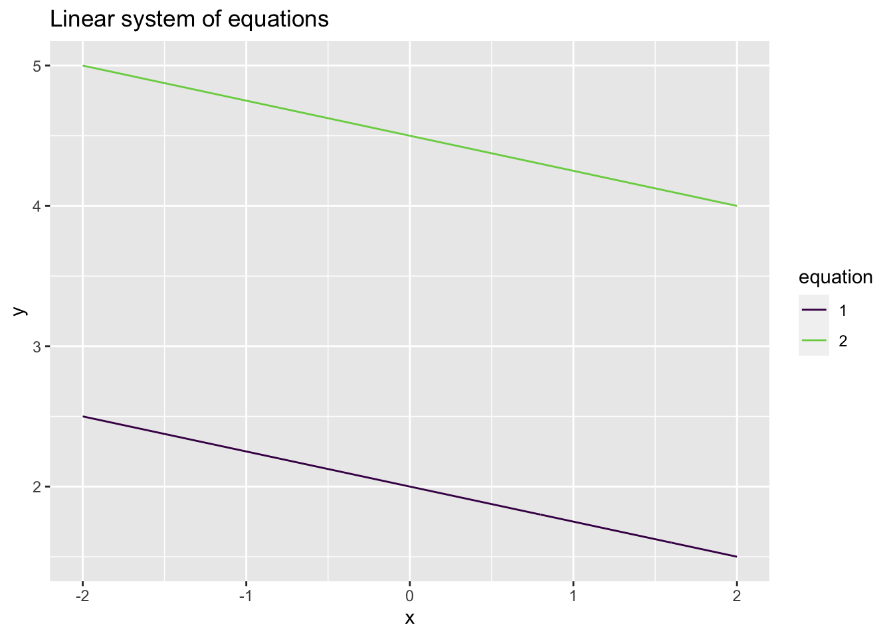
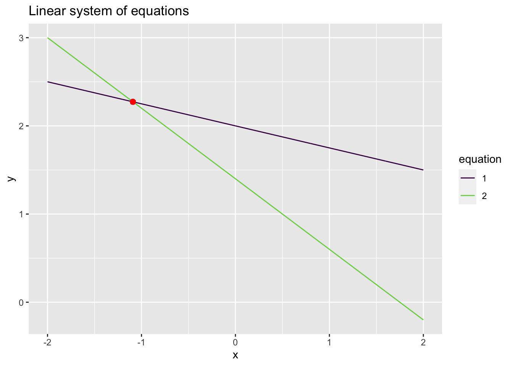
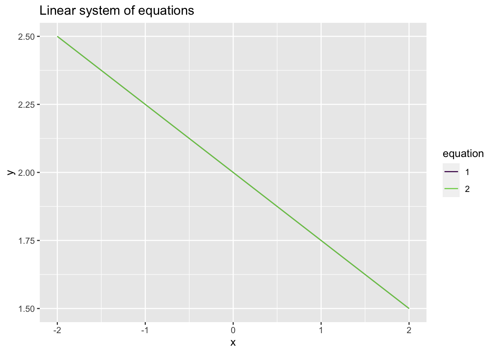
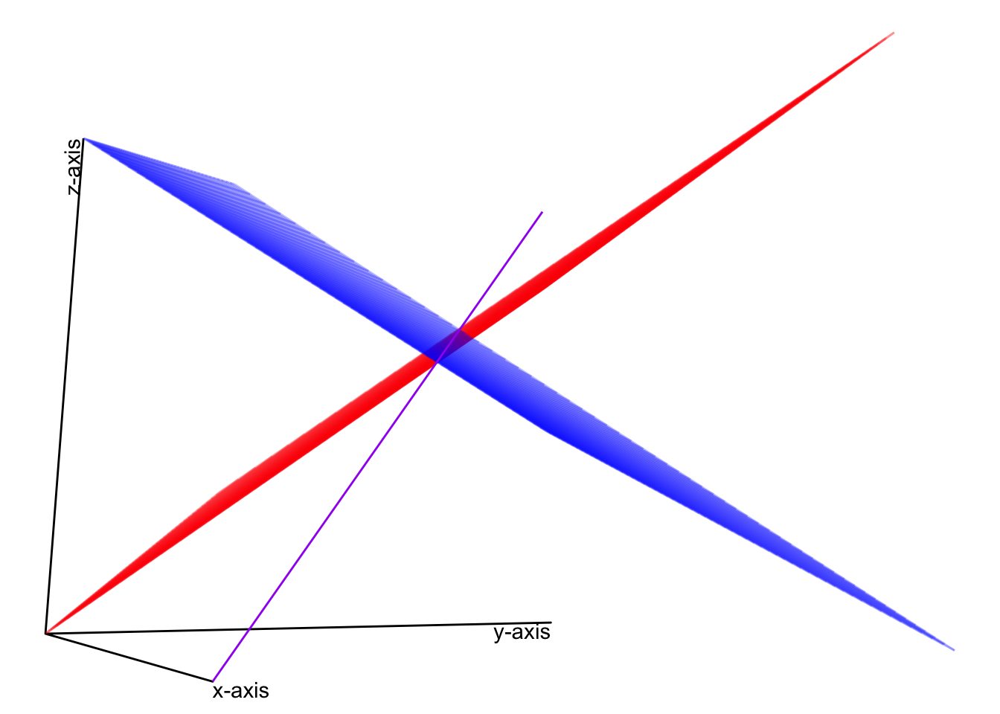

library(tidyverse)
# For 3-d plotting
# if devtools package not installed, install the package
if (!require(devtools)) {
install.packages("devtools")
}
# if gg3D package not installed, install the package
if (!require(gg3D)) {
devtools::install_github("AckerDWM/gg3D")
library(gg3D)
}
# if dasc2594 package not installed, install the package
if (!require(dasc2594)) {
devtools::install_github("jtipton25/dasc2594")
library(dasc2594)
}4 Linear Systems of Equations
4.1 Linear Systems of equations
4.1.1 Linear equations
Definition 4.1 (Linear Equations) Let \(x_1, x_2, \ldots, x_n\) be variables with coefficients \(a_1, a_2, \ldots, a_n\), and \(b\) are fixed and known numbers. Then, we say
\[ \begin{aligned} a_1 x_1 + a_2 x_2 + \cdots + a_n x_n & = b \end{aligned} \tag{4.1}\]
is a linear equation.
Example 4.1 Show the equation for a line with slope \(m\) and \(y\)-intercept \(b\) is
\[ \begin{aligned} y & = m x + b, \end{aligned} \]
is a linear equation.
Example 4.2 Determine if the equation below is a linear equation
\[ \begin{aligned} \sqrt{19} x_1 & = (4 + \sqrt{2}) x_2 - x_3 - 9. \end{aligned} \]
Example 4.3 Determine if the equation below is a linear equation
\[ \begin{aligned} -4 x_1 + 5 x_2 - 11 & = x_3. \end{aligned} \]
Example 4.4 Determine if the equation
\[ \begin{aligned} x_1 & = x_2^2 + 3 \end{aligned} \]
is a linear equation.
Example 4.5 Determine if the equation
\[ \begin{aligned} x_1 + x_2 - x_1 x_2 & = 16 \end{aligned} \]
is a linear equation.
Example 4.6 Is the following equation a linear equation? \(x_1 + 3 x_1 x_2 = 5\)
Example 4.7 Is the following equation a linear equation? \(5x + 7y + 8z = 11.2\)
Example 4.8 Is the following equation a linear equation? \(\frac{1}{4} y + \sqrt{2} z = 2^6\)
Example 4.9 Is the following equation a linear equation? \(x + 4 y^2 = 9\)
4.1.2 Systems of linear equations
Definition 4.2 (System of Equations) A set of two or more linear equations that each contain the same set of variables is called a system of linear equations.
Example 4.10 Determine if the following equations are a system of linear equations.
\[\begin{alignat*}{4} x_1 & {}+{} & 4 x_2 & {}-{} & x_3 & {}={} & 11 \\ 4 x_1 & {}+{} & 5 x_2 & {}{} & & {}={} & 9. \end{alignat*}\]
Example 4.11 Determine if the following equations are a system of linear equations.
\[\begin{alignat*}{4} x_1 & {}+{} & 4 x_1 x_2 & {}-{} & x_3 & {}={} & 11 \\ 4 x_1 & {}+{} & 5 x_2 & {}+{} & 2 x_3 & {}={} & \pi. \end{alignat*}\]
For the remainder of the section on linear algebra, we will focus on linear equations.
4.1.3 Solutions of linear systems
A fundamental question when presented with a linear system of equations is whether the system has a solution.
Definition 4.3 (Solution of Systems of Equations) A solution to a system means that there are numbers \((s_1, s_2, \ldots, s_n)\) that each of the variables \(x_1, x_2, \ldots, x_n\) take that allow for all the equations to simultaneously be true.
Checking if a vector is a solution is straightforward. You just substitute the values of the vector into the equations and see if the equations are satisfied. For example, if we consider the equation
\[ x_1 + x_2 = 7, \]
the vector \(\mathbf{x} = \begin{pmatrix} x_1 \\ x_2 \end{pmatrix} = \begin{pmatrix} 4 \\ 3 \end{pmatrix}\) is a valid solution because
\[ 4 + 3 = 7 \]
but the vector \(\mathbf{x} = \begin{pmatrix} x_1 \\ x_2 \end{pmatrix} = \begin{pmatrix} 5 \\ 9 \end{pmatrix}\) is not a valid solution because
\[ 5 + 9 \neq 7. \]
Example 4.12 Is \(\mathbf{x} = \begin{pmatrix} x_1 \\ x_2 \\ x_3 \end{pmatrix} = \begin{pmatrix} 5 \\ 3 \\ 6 \end{pmatrix}\) a solution to the system of equations \[\begin{alignat*}{4} x_1 & {}+{} & 4 x_2 & {}-{} & x_3 & {}={} & 11 \\ 4 x_1 & {}+{} & 5 x_2 & {}+{} & 0 x_3 & {}={} & 9? \end{alignat*}\]
Example 4.13 Finding a solution a system of equations is more challenging. To find a solution, we add/subtract equations to cancel out variables. For example, consider the following example. You work in a small zoo. In the zoo, there are ostriches (one head, two legs, and no horns), one-horned rhinos (one head, four legs, and one horn), and two-horned antelope (one head, four legs, and two horns). Consider the following statements about the set of animals in the zoo:
There are 12 heads
There are 38 feet
There are 10 horns
Using this information, how many ostriches, rhinos, and antelope are there.
Example 4.14 Consider the system of equations
\[\begin{alignat*}{3} x & {}+{} & 4 y & {}={} & 8 \\ 4 x & {}+{} & 5 y & {}={} & 7. \end{alignat*}\]
Find a solution to the system of equations.
Solution
To find if a solution to this equation exists, we can do some algebra and take 4 times the top equation and then subtract the bottom equation, replacing the bottom equation with this new sum like
\[\begin{alignat*}{3} x & {}+{} & 4 y & {}={} & 8 \\ 4 x - 4 \times (x) & {}+{} & 5 y - 4 \times (4y) & {}={} & 7 - 4 \times (8), \end{alignat*}\] where the part of the equations in (\(\cdot\)) is the top equation. This system of equations now simplifies to \[\begin{alignat*}{3} x & {}+{} & 4 y & {}={} & 8 \\ 0 & {}+{} & - 11y & {}={} & -25, \end{alignat*}\] which gives \(y = \frac{25}{11}\). Plugging this value into the top equation gives \[\begin{alignat*}{3} x & {}+{} & 4 \frac{25}{11} & {}={} & 8 \\ 0 & {}+{} & y & {}={} & \frac{25}{11}, \end{alignat*}\] where we can solve \(x = 8 - \frac{100}{11} = -\frac{12}{11}\) giving the solution of the form \[\begin{alignat*}{3} x & {}+{} & 0 & {}={} & -\frac{12}{11} \\ 0 & {}+{} & y & {}={} & \frac{25}{11}, \end{alignat*}\] In this case, the system of equation has the solution \(x = -\frac{12}{11}\) and \(y = \frac{25}{11}\). While finding the solution can be done algebraically, what does this mean visually (geometrically)? The original equations were \[\begin{alignat*}{3} x & {}+{} & 4 y & {}={} & 8 \\ 4 x & {}+{} & 5 y & {}={} & 7, \end{alignat*}\]
which, writing \(y\) as a function of \(x\) define two lines:
- \(y = -\frac{x}{4} + 2\)
- \(y = -\frac{4x}{5} + \frac{7}{5}\)
Lets plot these equations in R and see what they look like
# define some grid points to evaluate the line
x <- seq(-2, 2, length = 1000)
dat <- data.frame(
x = c(x, x),
y = c(-x / 4 + 2, - 4 / 5 * x + 7/5),
equation = factor(rep(c(1, 2), each = 1000))
)
glimpse(dat)Rows: 2,000
Columns: 3
$ x <dbl> -2.000000, -1.995996, -1.991992, -1.987988, -1.983984, -1.979
$ y <dbl> 2.500000, 2.498999, 2.497998, 2.496997, 2.495996, 2.494995, 2
$ equation <fct> 1, 1, 1, 1, 1, 1, 1, 1, 1, 1, 1, 1, 1, 1, 1, 1, 1, 1, 1, 1, 1dat %>%
ggplot(aes(x = x, y = y, color = equation, group = equation)) +
geom_line() +
scale_color_viridis_d(end = 0.8) +
# solution x = -12/11, y = 25/11
geom_point(aes(x = -12/11, y = 25/11), color = "red", size = 2) +
ggtitle("Linear system of equations")
From this plot, it is clear that the solution to the system of equations is the location where the two lines intersect!
START BACK HERE WITH MORE EXAMPLES OF CANCELING VARIABLES
4.1.4 Types of solutions
Typically, there are 3 cases for the solutions to a system of linear equations
- There are no solutions
- There is one solution (Figure 4.1)
- There are infinitely many solutions
Definition 4.4 A linear system of equations is called consistent if the system has either one or infinitely many solutions and is called inconsistent if the system has no solution.
There are no solutions:
Consider the system of linear equations
\[\begin{alignat*}{3} x & {}+{} & 4 y & {}={} & 8 \\ 4 x & {}+{} & 16 y & {}={} & 18. \end{alignat*}\]
# define some grid points to evaluate the line
x <- seq(-2, 2, length = 1000)
dat <- data.frame(
x = c(x, x),
y = c(-x / 4 + 8 / 4, - x / 4 + 18 / 4),
equation = factor(rep(c(1, 2), each = 1000))
)
glimpse(dat)Rows: 2,000
Columns: 3
$ x <dbl> -2.000000, -1.995996, -1.991992, -1.987988, -1.983984, -1.979
$ y <dbl> 2.500000, 2.498999, 2.497998, 2.496997, 2.495996, 2.494995, 2
$ equation <fct> 1, 1, 1, 1, 1, 1, 1, 1, 1, 1, 1, 1, 1, 1, 1, 1, 1, 1, 1, 1, 1dat %>%
ggplot(aes(x = x, y = y, color = equation, group = equation)) +
geom_line() +
scale_color_viridis_d(end = 0.8) +
# solution x = -12/11, y = 25/11
ggtitle("Linear system of equations")
In this case, the linear equations are parallel lines and will never intersect so therefore there is no solution.
There is one solution:
Consider the system of equations from Example 4.14
\[\begin{alignat*}{3} x & {}+{} & 4 y & {}={} & 8 \\ 4 x & {}+{} & 5 y & {}={} & 7. \end{alignat*}\]
Where we found that there was a unique solution \(x = -\frac{12}{11}\) and \(y = \frac{25}{11}\). While finding the solution can be done algebraically, what does this mean visually (geometrically)? The original equations were \[\begin{alignat*}{3} x & {}+{} & 4 y & {}={} & 8 \\ 4 x & {}+{} & 5 y & {}={} & 7, \end{alignat*}\] which, writing \(y\) as a function of \(x\) define two lines:
- \(y = -\frac{x}{4} + 2\)
- \(y = -\frac{4x}{5} + \frac{7}{5}\)
Lets plot these equations in R and see what they look like
# define some grid points to evaluate the line
x <- seq(-2, 2, length = 1000)
dat <- data.frame(
x = c(x, x),
y = c(-x / 4 + 2, - 4 / 5 * x + 7/5),
equation = factor(rep(c(1, 2), each = 1000))
)
glimpse(dat)Rows: 2,000
Columns: 3
$ x <dbl> -2.000000, -1.995996, -1.991992, -1.987988, -1.983984, -1.979
$ y <dbl> 2.500000, 2.498999, 2.497998, 2.496997, 2.495996, 2.494995, 2
$ equation <fct> 1, 1, 1, 1, 1, 1, 1, 1, 1, 1, 1, 1, 1, 1, 1, 1, 1, 1, 1, 1, 1dat %>%
ggplot(aes(x = x, y = y, color = equation, group = equation)) +
geom_line() +
scale_color_viridis_d(end = 0.8) +
# solution x = -12/11, y = 25/11
geom_point(aes(x = -12/11, y = 25/11), color = "red", size = 2) +
ggtitle("Linear system of equations")
From this plot, it is clear that the solution to the system of equations is the point where the two lines intersect!
There are infinitely many solutions:
Consider the system of linear equations \[\begin{alignat*}{3} x & {}+{} & 4 y & {}={} & 8 \\ 4 x & {}+{} & 16 y & {}={} & 32. \end{alignat*}\]
# define some grid points to evaluate the line
x <- seq(-2, 2, length = 1000)
dat <- data.frame(
x = c(x, x),
y = c(-x / 4 + 8 / 4, - 4 * x / 16 + 32 / 16),
equation = factor(rep(c(1, 2), each = 1000))
)
glimpse(dat)Rows: 2,000
Columns: 3
$ x <dbl> -2.000000, -1.995996, -1.991992, -1.987988, -1.983984, -1.979
$ y <dbl> 2.500000, 2.498999, 2.497998, 2.496997, 2.495996, 2.494995, 2
$ equation <fct> 1, 1, 1, 1, 1, 1, 1, 1, 1, 1, 1, 1, 1, 1, 1, 1, 1, 1, 1, 1, 1dat %>%
ggplot(aes(x = x, y = y, color = equation, group = equation)) +
geom_line() +
scale_color_viridis_d(end = 0.8) +
# solution x = -12/11, y = 25/11
ggtitle("Linear system of equations")
In this case, the linear equations are perfectly overlapping lines and always intersect so therefore there are infinitely many solutions (all points on the line).
Definition 4.5 Two linear systems of equations are called equivalent if both systems share the same solution set.
For example, the system of equations \[\begin{alignat*}{4} x_1 & {}+{} & 4 x_2 & {}-{} & x_3 & {}={} & 11 \\ 4 x_1 & {}+{} & 5 x_2 & {}+{} & 2 x_3 & {}={} & 9 \end{alignat*}\] and the system of equations \[\begin{alignat*}{4} 2x_1 & {}+{} & 8 x_2 & {}-{} & 2 x_3 & {}={} & 22 \\ 8 x_1 & {}+{} & 10 x_2 & {}+{} & 4 x_3 & {}={} & 18. \end{alignat*}\] have the same solution set (the second set of equations is just 2 times the first set of equations).
Example 4.15 For the following system of equations, determine if a solution(s) exist and if so, solve for the solution \[\begin{alignat*}{3} 4 x_1 & {}+{} & 5 x_2 & {}={} & 8 \\ 9 x_1 & {}-{} & 3 x_2 & {}={} & 4. \end{alignat*}\]
Example 4.16 For the following system of equations, determine if a solution(s) exist and if so, solve for the solution \[\begin{alignat*}{4} 7 x_1 & {}+{} & 3 x_2 & {}+{} & 4 x_3 & {}={} & 5\\ 4 x_1 & {}-{} & 5 x_2 && & {}={} & -2 \end{alignat*}\]
Example 4.17 For the following system of equations, determine if a solution(s) exist and if so, solve for the solution \[\begin{alignat*}{3} 4 x_1 & {}-{} & 2 x_2 & {}={} & 8\\ 2 x_1 & {}+{} & x_2 & {}={} & 7 \\ -3 x_1 & {}+{} & 6 x_2 &{}={} & 11 \end{alignat*}\]
4.1.5 Elementary row and column operations on matrices
The elementary row (column) operations include
- swaps: swapping two rows (columns),
- sums: replacing a row (column) by the sum itself and a multiple of another row (column)
- scalar multiplication: replacing a row (column) by a scalar multiple times itself
Note that these operations are exactly what we used to solve the equation using algebra above (except for swapping rows).
Example 4.18 For the elementary row operations listed above, we demonstrate these using the matrix
\[ \begin{aligned} \begin{pmatrix} 1 & 4 & 7 \\ 2 & 5 & 8 \\ 3 & 6 & 9 \end{pmatrix} \end{aligned} \]
The matrix \(\mathbf{A}\) can be represented in R using
A <- matrix(c(1:9), 3, 3, byrow = FALSE)Swap the first and second rows.
Add -3 times the first row to the third row.
Multiply the second row by \(\frac{1}{2}\).
4.1.6 The Augmented matrix form of a system of equations
Consider the linear system of equations
\[\begin{alignat*}{4} x_1 & {}+{} & 4 x_2 & {}-{} & x_3 & {}={} & 11 \\ 4 x_1 & {}+{} & 5 x_2 & {}+{} & 2 x_3 & {}={} & 9. \end{alignat*}\] The augmented matrix representation of this system of linear equations is given by the matrix
\[ \begin{aligned} \begin{pmatrix} 1 & 4 & - 1 & 11 \\ 4 & 5 & 2 & 9 \end{pmatrix}, \end{aligned} \]
where the first column of the matrix represents the variable \(x_1\), the second column of the matrix represents the variable \(x_2\), the third column of the matrix represents the variable \(x_3\), and the fourth column of the matrix represents the constant terms. We can express the augmented form in R using a matrix
augmented_matrix <- matrix(c(1, 4, 4, 5, -1, 2, 11, 9), 2, 4)
augmented_matrix [,1] [,2] [,3] [,4]
[1,] 1 4 -1 11
[2,] 4 5 2 9and to make clear the respective variables, we can add in column names as a matrix attribute using the colnames() function
colnames(augmented_matrix) <- c("x1", "x2", "x3", "constants")
augmented_matrix x1 x2 x3 constants
[1,] 1 4 -1 11
[2,] 4 5 2 9which adds labels to each of the columns.
Now, using elementary row operations on the matrix, we can attempt to find solutions to the system of equations. First, we multiply the first row by -4 and add it to the second row of the matrix and replace the second row with this sum
augmented_matrix[2, ] <- -4 * augmented_matrix[1, ] + augmented_matrix[2, ]
augmented_matrix x1 x2 x3 constants
[1,] 1 4 -1 11
[2,] 0 -11 6 -35Next, scale the second row to have a leading value of 1 by dividing by -11
augmented_matrix[2, ] <- augmented_matrix[2, ] / (-11)
augmented_matrix x1 x2 x3 constants
[1,] 1 4 -1.0000000 11.000000
[2,] 0 1 -0.5454545 3.181818We can then multiply the second row by -4 and add it to the first row and replace the first row with this value.
augmented_matrix[1, ] <- augmented_matrix[1, ] - 4 * augmented_matrix[2, ]
augmented_matrix x1 x2 x3 constants
[1,] 1 0 1.1818182 -1.727273
[2,] 0 1 -0.5454545 3.181818Notice how the matrix has a triangular form (The lower part of the triangle is made of 0s and the upper part has numbers).
The triangular form tells us that There are infinitely many solutions to this system of equation. The infinite solutions are subject to the requirements that
\[x_1 = - \frac{19}{11} - \frac{13}{11} x_3\]
and
\[x_2 = \frac{35}{11} + \frac{6}{11} x_3.\]
To get this into a reasonable form, we will solve these equations as a function of \(x_1\). Solving the first equation for \(x_3\) gives
\[x_3 = - \frac{19}{13} -\frac{11}{13} x_1.\]
Then, plugging this into \(x_3\) in the second equation gives
\[ \begin{aligned} x_2 & = \frac{35}{11} + \frac{6}{11} \left( - \frac{19}{13} -\frac{11}{13} x_1 \right) \\ & = \frac{341}{143} - \frac{6}{13} x_1 \end{aligned} \]
which defines a linear relationship between \(x_1\) and \(x_2\). Notice that in these last two solutions, \(x_1\) is a free variable and \(x_2\) and \(x_3\) are determined by \(x_1\).
In the plot below, the two planes (red and blue) are the geometric plots of the linear equations in the system of equations (the red plane is the top equation and the blue plane is the bottom equation). The purple line is the equation for the solution given the free variable \(x_3\) and lies at the intersection of the two planes, much like the point in the two lines in figure linking reference here lies at the intersection of the two points.
# uses gg3D library
n <- 60
x1 <- x2 <- seq(-10, 10, length = n)
region <- expand.grid(x1 = x1, x2 = x2)
df <- data.frame(
x1 = region$x1,
x2 = region$x2,
x3 = - 11 + (region$x1 + 4 * region$x2)
)
df2 <- data.frame(
x1 = region$x1,
x2 = region$x2,
x3 = (9 - 4 * region$x1 - 5 * region$x2) / 2
)
df_solution <- data.frame(
x1 = x1,
x2 = 341 / 143 - 6 / 13 * x1,
x3 = -19/13 - 11/13 * x1
)
# theta and phi set up the "perspective/viewing angle" of the 3D plot
theta <- 63
phi <- -12
ggplot(df, aes(x1, x2, z = x3)) +
axes_3D(theta = theta, phi = phi) +
stat_wireframe(alpha = 0.25, color = "red", theta = theta, phi = phi) +
stat_wireframe(data = df2, aes(x = x1, y = x2, z = x3), alpha = 0.25, color = "blue", theta = theta, phi = phi) +
stat_3D(data = df_solution, aes(x1, x2, z = x3), geom = "line", theta = theta, phi = phi, color = "purple") +
theme_void() +
theme(legend.position = "none") +
labs_3D(hjust=c(0,1,1), vjust=c(1, 1, -0.2), angle=c(0, 0, 90), theta = theta, phi = phi) Warning: Removed 2 row(s) containing missing values (geom_path).
Warning: Removed 2 row(s) containing missing values (geom_path).
4.1.7 Existence and Uniqueness
Definition 4.6 A system of linear equations is said to be consistent if at least one solution exists. The linear system of equations is said to have a unique solution if only one solution exists.
Example 4.19 Is the system of linear equations consistent? If the system is consistent, does it have a unique solution?
\[ \begin{alignedat}{4} 16 x_1 & {}+{} & 2 x_2 & {}+{} & 3 x_3 & {}={} & 13\\ 5 x_1 & {}+{} & 11 x_2 & {}+{} & 10 x_3 & {}={} & 8\\ 9 x_1 & {}+{} & 7 x_2 & {}+{} & 6 x_3 & {}={} & 12\\ 4 x_1 & {}+{} & 14 x_2 & {}+{} & 15 x_3 & {}={} & 1 \end{alignedat} \]
Example 4.20 Is the system of linear equations consistent? If the system is consistent, does it have a unique solution?
\[ \begin{alignedat}{4} x_1 & {}+{} & 2 x_2 & {}+{} & 3 x_3 & {}={} & 5\\ x_1 & {}+{} & 3 x_2 & {}+{} & 2 x_3 & {}={} & 2\\ 3 x_1 & {}+{} & 2 x_2 & {}+{} & x_3 & {}={} & 7 \end{alignedat} \]
4.2 Reduce row echelon form
Reducing a matrix to row echelon form is a useful technique for working with matrices. The row echelon form can be used to solve systems of equations, as well as determine other properties of a matrix that are yet to be discussed, including rank, invertibility, column/row spaces, etc.
Definition 4.7 A matrix is said to be in echelon form if
all nonzero rows are above any rows of zeros (all rows consisting entirely of zeros are at the bottom)
the leading entry/coefficient of a nonzero row (called the pivot) is always strictly to the right of the leading entry/coefficient of the row above
Example 4.21 echelon matrix example in class
Definition 4.8 A matrix is in reduced row echelon form if it is in echelon form and
the leading entry/coefficient of each row is 1
The leading entry/coefficient of 1 is the only nonzero entry in its column.
Example 4.22 rref matrix example in class
Definition 4.9 Echelon matrices have the property of being upper diagonal. A matrix is said to be upper diagonal if all entries of the matrix at or above the diagonal are nonzero.
- Example: **lower and non-lower diagonal matrices
Definition 4.10 Two matrices are row-equivalent if one matrix can be transformed to the other through elementary row operations.
Theorem 4.1 A nonzero matrix can be transformed into more than one echelon forms. However, the reduced row echelon form of a nonzero matrix is unique.
Example 4.23 Using elementary row operations, calculate the reduced row echelon form of the following matrices
fill in later
fill in later
fill in later
4.2.1 Pivot positions
The leading entry/coefficients of a row echelon form matrix are called pivots. The positions of the pivot positions are the same for any row echelon form of a matrix. In reduced row echelon form, these pivot positions take the value 1.
Definition 4.11 In a matrix that is in reduced echelon form, the pivot position is the first nonzero element of each row. The column in which the pivot position occurs is called a pivot column.
Example 4.24 pivot position and pivot columns
4.2.2 Finding the reduced row echelon form
Calculating the reduced row echelon form is known as Gaussian elimination, which is named after Johann Carl Friedrich Gauss. This algorithm uses elementary row operations to calculate the reduced row echelon form. The following steps perform the Gaussian elimination algorithm.
- Start with the left-most nonzero column, which is a pivot column
- If the top row is zero, swap rows so that the top row is nonzero so that the top row has a nonzero element in the pivot position.
- Use row multiplication and addition to zero out all positions in the pivot column below the top row (pivot position).
- Ignore this top row and repeat steps 1-3 until there are no more nonzero rows to apply steps 1-3 on. At the end of this step, the matrix is in row echelon form.
- Starting at the right-most pivot column, use elementary row operations to zero out all positions above each pivot and to make each pivot position 1. At the end of this step, the matrix is in reduced row echelon form.
Example 4.25 in class
# pracma library
# rref example in class4.2.3 Using reduced row echelon forms to solve systems of linear equations
When a system of linear equations is expressed as an augmented matrix, the reduced row echelon form can be used to find solutions to those systems of equations. Consider the systems of equations
\[ \begin{alignedat}{4} 3 x_1 & {}+{} & 8 x_2 & {}-{} & 4 x_3 & {}={} & 6\\ 2 x_1 & {}-{} & 4 x_2 & {}-{} & 1 x_3 & {}={} & 8\\ 4 x_1 & {}+{} & 5 x_2 & {}{} & & {}={} & 9 \end{alignedat} \]
which can be written in the augmented matrix form as
\[ \begin{pmatrix} 3 & 8 & -4 & 6 \\ 2 & -4 & -1 & 8 \\ 4 & 5 & 0 & 9 \end{pmatrix} \]
In R, this is the matrix
# define matrixCalculating the reduced row echelon form, gives
# calculate rref of augmented matrixwhich gives the solution
- Example 4.26
- calculate the RREF for the augmented matrix in the example above by hand
Example 4.27 Another example where we find a solution is
\[ \begin{aligned} 5 x_1 && + && 4 x_2 && - && 2 x_3 && = & 0 \\ -3 x_1 && - && 2 x_2 && - && 4 x_3 && = & 1 \\ \end{aligned} \]
Do same steps
Definition 4.12 In a system of linear equations that is underdetermined (fewer equations than unknowns), the determined/basic variables are those variable that have a 1 in the respective columns when in reduced row echelon form (i.e., variables in a pivot position). The variables that are not in a pivot position are called free variable.
Example 4.28 in class
4.2.4 Existence and uniqueness from reduced row echelon form
The row echelon form is useful to determine if a system of linear equations is consistent (the system of equations has a solution). To check if a solution to a linear system of equations exists, convert the system of equations to an augmented matrix form. Then, reduce the augmented matrix to row echelon form using elementary matrix operations. As long as there is not an equation of the form
\[ 0 = \mbox{constant} \]
for some constant number not equal to 0, the system of linear equations is consistent. If the augmented matrix can be written in reduced row echelon form with no free variables, the solution to the linear system of equations is unique. These results give rise to the theorem
Theorem 4.2 A linear system of equations is consistent (has a solution) if the furthest right column (the constant column) is not a pivot column. If the system of equations is consistent, (i.e., the furthest right column is not a pivot column), the solution is unique if there are no free variables and there are infinitely many solutions if there is at least one free variable.
- Example: consistent system of equations
\(\begin{pmatrix} -7 & -9 & 7 & 8 \\ -4 & 0 & 6 & -6 \\ -10 & 3 & -8 & 5 \end{pmatrix}\)
- Example: inconsistent system of equations
\(\begin{pmatrix} -7 & 0 & -8 & -5 \\ -4 & 3 & 8 & -2 \\ -10 & 7 & -6 & 4 \\ -9 & 6 & 5 & 1 \end{pmatrix}\)